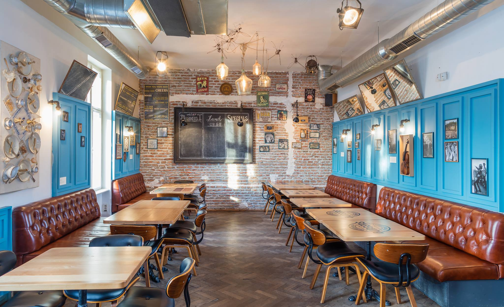
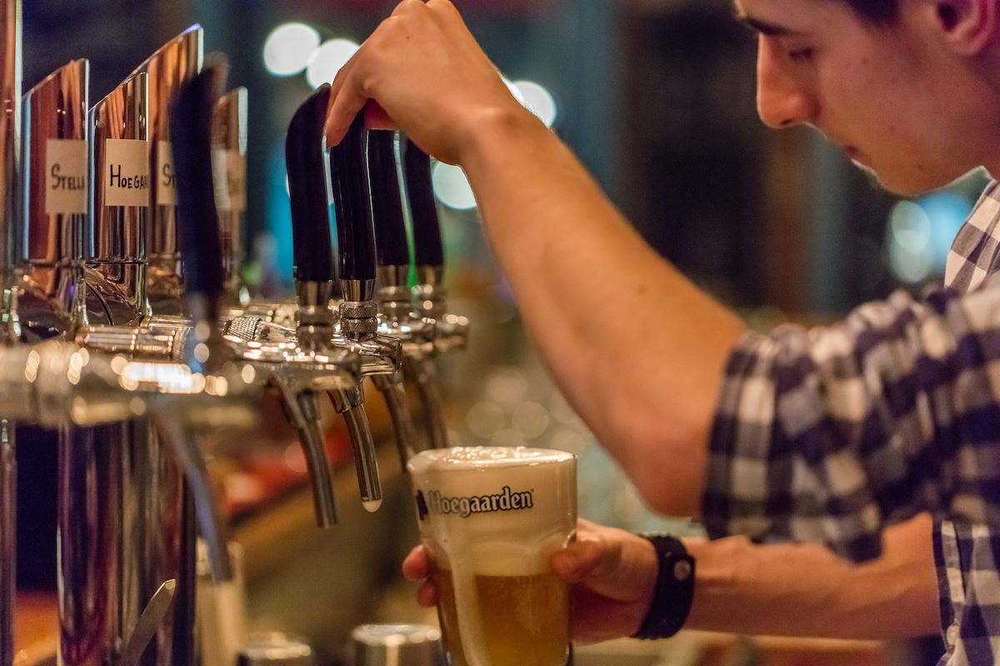

Despre
Povestea Noastră
Mai mult decât un pub, Colin's Gastro Pub este o destinație gastronomică urbană. Într-un spațiu unde energia vibrantă a orașului întâlnește confortul atemporal,
redefinim conceptul de 'comfort food' din Cluj.
Fiecare preparat este o reinterpretare îndrăzneață, fiecare bere artizanală este o poveste despre pasiune și calitate.
Meniul Nostru
Gustul care definește perfecțiunea